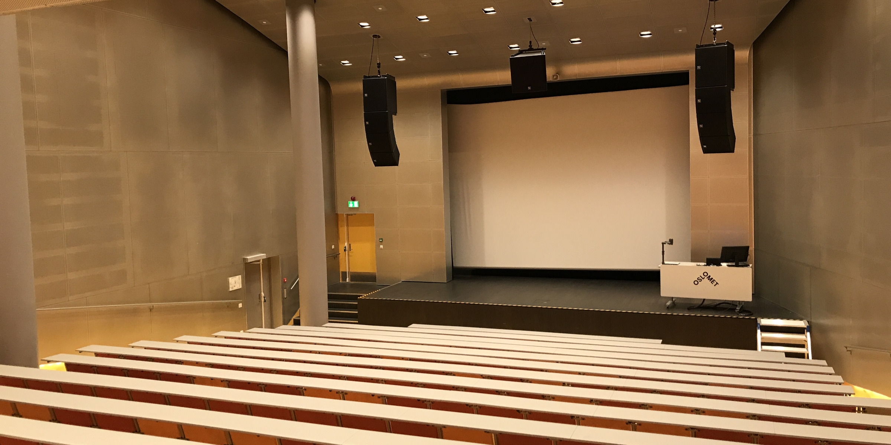

Store auditorium P32

Foto: OsloMet
Store auditorium
Offisielt kjent som N002.107, men på folkemunne bare kalt "Store auditorium", er
et stort auditorium som ligger i underetasjen i Andrea Arntzens hus i Pilestredet 32.
Auditoriumet har plass til 440 personer. Adgang til rommet krever tilgang med nøkkelkort.
Auditoriumet
kan finnes på MazeMap her!
Utstyr
Auditoriumet er utstyrt med blant annet:
- Dokumentkamera
- Fast PC
- Høyttalere
- Lysregulering
- Flygel
- Skrivbar PC-monitor
I tillegg er rommet tilrettelagt for rullestolbrukere, både som forleser og student, og det er satt opp teleslynge.